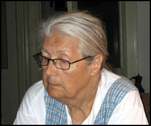

Frați de sânge și limbă cu noi, trăiesc în Croația și sunt pe cale de dispariție. Deși n-au fost niciodată în România, jură cu mâna pe inimă că sunt... români
Pământul roșu al rumerilor
În Croația, într-un colț uitat de lume, de o parte și de alta a singurului munte din peninsula Istria, se află câteva sate sărace, unele aproape în întregime părăsite, în care, timp de multe sute de ani, s-a vorbit românește. La începutul secolului al XIX-lea erau, probabil, vreo opt mii de suflete. Astăzi au rămas mai puțin de 200. Străinii le-au spus cici, celor de la nord de munte, și ciribiri, celor de la sud. Documentele vechi italiene îi numeau rumeri. Ei își spun vlași, iar limba și-o numesc vlașki. Oamenii de știința le-au spus istro-români.
Învățații spun că istro-românii făceau parte, prin secolul VII (pe la anii 800 după Hristos), din ramura românilor vestici, trăitori în nord-vestul Peninsulei Balcanice, în Serbia, Bosnia și Croația, din care astăzi au mai rămas locuitorii Banatului sârbesc. Au fost împinși spre vest, până în peninsula Istria, în secolul XV, de câtre turci, sau poate mai devreme. Câțiva cercetători susțin că ar fi plecat din țara Moților și Maramureș, deoarece au în dialectul lor o particularitate care se regăsea în trecut și în regiunile menționate: îl transforma pe n în r atunci când se află între două vocale. Adică spun mâră, spure, bură pentru mână, spune, bună.
Odată ajunși în peninsula Istria, românii s-au stabilit în preajma singurului munte din zonâ: Muntele Mare (Monte Maggiore). În trecut, teritoriul locuit de ei era mult mai întins, dar astăzi, istro-româna se mai vorbește doar în vreo opt sate: la nord de munte, în satul Jeiăni, cel mai mare și mai conservator sat de istro-români, iar la sud, în câteva așezări mărunte, grupate în jurul satului șușnievița (în italiană Valdarsa). Regiunea fusese pustiită de ciumă înainte de venirea românilor, care și-au întemeiat satele pe pământ gol. Ei au devenit oamenii locului. Solul roșu, neroditor, nu le-a oferit prea multe. Aveau turme de oi și vite, făceau puțină agricultură și, mai ales, produceau cărbune de lemn, profitând de puținele păduri din zona. Apoi își încărcau coșurile cu mangal, le urcau în spinare și treceau muntele ca să-l vândă la Trieste sau la Fiume. știau să facă și oțet, pe care îl vindeau până departe. În vremurile trecute, existau în zonă și câteva lacuri în care își adăpau turmele. Astăzi nu mai există nici unul. Unele au fost secate pentru că răspândeau malaria, altele au secat singure, iar cel din urmă, lacul Cepici, a fost secat în 1981, când s-a construit tunelul ce străbate muntele dintr-o parte în alta. Casele istro-românilor sunt toate modeste, fără garduri, clădite din piatra întunecată. Au avut dintotdeauna o viață simplă, plină de greutăți. Nimeni nu a fost de partea lor: nici pământul, nici autoritățile, nici vecinii, nici frații lor români. Au fost mereu singuri.
Istro-românii se știu catolici dintotdeauna. Nu au avut niciodată preoți istro-români, botezurile, nunțile și înmormântările lor erau celebrate în altă limbă decât a lor. Dar au tradiții și legende foarte asemănătoare cu ale noastre. Astăzi, istro-românii nu mai au animale și nici vechile ocupații. Cei mai mulți sunt "bătâri," cum spun ei la bătrâni, iar cei ce sunt încă în putere muncesc prin orașe. Nu au școală în limba lor, nici preot, nici cărți, iar frații lor români nu au auzit de ei. Au venit cei de la UNESCO și de la Discovery și i-au filmat. Au ales din toate cele câteva mii de limbi pe cale de dispariție de pe tot pământul, doar nouă. Iar între cele nouă, istro-româna. Lingviștii americani se ocupă de comunitatea de istro-români din New York, unde există vreo două sute de vorbitori: cam câți au rămas în totalitate și în satele lor natale. Au venit și italienii să îi ajute pe istro-românii din Croația, să atragă atenția asupra lor. S-au luptat pentru ei și unii români stabiliți în Italia, cu mijloace puține și entuziasm mare. Cei mai bravi dintre ei sunt Petru Rațiu și Elena Pântazescu, împreună cu soțul ei, Ervino Curtis. Au făcut manifestări, conferințe, congrese, expoziții. Dar mai mult nu pot face nici ei. Și croații sunt foarte deschiși la dialog. Nimeni nu-i împiedică pe istro-români să-și cultive tradițiile și limba. Dar ei singuri nu pot face nimic, căci nu au bani și nici intelectuali care să se priceapă la astfel de lucruri. Ei sunt oameni simpli, de la țară, hrăniți doar de pământul lor cel roșu și arid. E nevoie de proiecte serioase, costisitoare, pe termen lung, pentru a opri, în cel de-al 12-lea ceas, dispariția limbii lor și, prin aceasta, dispariția lor ca grup.
O limbă condamnată la moarte
Câți dintre românii din România au auzit de istro-români? Au auzit de aromâni (sau macedoromâni), pentru ca mulți dintre aceștia s-au stabilit în România, mai ales în Dobrogea, și unii au devenit chiar persoane publice. Poate au auzit de meglenoromâni, pentru ca și aceștia au ajuns în România, în număr mic, și si-au întemeiat câteva sate. Dar despre istro-români cine a auzit?
Primele știri despre istro-români apar în documente italienești din secolul al XVI-lea, dar unele nume de persoane și de locuri apar chiar cu câteva secole mai înainte. Dar la noi, foarte multa vreme nu s-a știut de existența lor. Abia pe la mijlocul secolului al XIX-lea a ajuns la ei primul cărturar român, Ion Maiorescu, tatăl lui Titu Maiorescu. În vremea aceea, Istria era a austriecilor, care au stăpânit-o timp de o sută de ani, până la 1918. Mare a fost uimirea lui Maiorescu să-i găsească și să-i audă vorbind! El a deschis șirul învățaților care s-au ocupat de această ramură de românitate, dar tot el a fost și cel dintâi care a prevăzut sfârșitul apropiat al acesteia: doar doua-trei generații mai aveau să vorbească, în viziunea lui Maiorescu, acest dialect. E adevărat că au trecut mai multe generații, dar sfârșitul e aproape. După primul război mondial, Istria a devenit teritoriu italian. Istro-românii nu aveau învățământ în limba lor, ci mergeau la școli italiene. A fost o perioadă de liniște și de bine pentru ei. Au avansat și cercetările asupra lor. Profesorul ieșean Theodor Burada, venit în Istria sa le studieze limba, îl încurajează pe tânărul Andrei Glavina, din satul Valdarsa, să vină în România, unde i se oferise o bursă. După studii la Iași și la Blaj, Glavina se întoarce acasă, reunește toate satele de istro-români de la sud de munte într-o singură comună, Valdarsa, și înființează prima (și, din păcate, ultima) școală cu predare în limba locală. Din nefericire, Glavina moare tânăr, iar școala se închide după doar patru ani de funcționare, din lipsa unui învățător român. Cel de-al doilea război mondial a însemnat începutul sfârșitului, marele exod. În 1945, peninsula a fost ocupată de armata lui Tito. Istria s-a pustiit din nou, ca de o nouă ciumă, sate întregi au fost abandonate. Cei mai mulți au plecat în Statele Unite, Canada, Australia, dar și în Italia. În 1960, numărul istro-românilor era estimat abia la 1500, în 1994 la 450, iar în anul 2000 la doar 250. Căsătoriile mixte au crescut mult în ultimul timp, tinerii, atâția câți mai sunt, se stabilesc în orașe, iar numărul vorbitorilor scade foarte repede. După aprecierile specialiștilor, dacă nu se face urgent ceva, în cel mult trei decenii aceasta limbă nu va mai exista.
Istria a devenit teritoriu iugoslav după 1945 și toți istro-românii au învățat limba croată. Învățământul este de atunci doar în limba croată. Numele satelor au fost slavizate, numele de persoana la fel. Dacă pe o hartă din 1926 aproape toata Istria este acoperita de nume de sate românești, precum Cătun (nu mai puțin de 11 așezări din Istria aveau acest nume!), Bolovani, Cărbune, Sucodru, Costârcean, Floricici, Ierbulișce, Murari, Dosani, Ciobani, Buzet, Vlahi etc., astăzi foarte puține din aceste nume mai există. Limba istro-română se vorbește doar în familie, iar tinerii refuză astăzi să o mai învețe, căci o percep ca pe o limbă fără prestigiu, inutilă. Nu i-a învățat nimeni să fie mândri de limba lor, nu le-a spus nimeni ce comoară dețin. Pâna în 1989, la noi nu s-a putut face nimic pentru ei. După 1989 nu a existat interes. Astăzi este deja foarte, foarte târziu. Dar încă mai există o rază de speranță.
Prof. Richard Sârbu, Universitatea din Timișoara
"Un miracol și o speranța"
În cei 50 de ani de comunism, singurii care puteau pomeni despre românii de dincolo de graniță erau cercetătorii, dar și aceia cu inima strânsă, căci subiectul putea fi catalogat drept "amestec în treburile interne ale altor state," iar deplasările pe teren se obțineau cu foarte mare dificultate. S-au ocupat cu dragoste de istro-români unii cercetători croați, mari prieteni ai României, ca August Kovačec de la Zagreb și Goran Filipi de la Pola. S-au ocupat și lingviștii de la noi din țară, chiar dacă nu puteau ajunge în satele din Iugoslavia de atunci. Dar au fost și unii cercetători români care au ajuns acolo. Unul dintre aceștia a fost profesorul Radu Flora, roman din Banatul sârbesc, care a trăit în Iugoslavia, la Novi Sad. Cel de-al doilea este profesorul Richard Sârbu, de la Universitatea din Timișoara, care a fost lector de limba română la universitatea din Liubliana, Slovenia, și în felul acesta, fiind aproape de satele de istro-români din Croația, s-a putut ocupa de limba lor. L-am cunoscut la Trieste, unde venise la o expoziție dedicata istro-românilor de către Asociația de prietenie romano-italiana "Decebal," patronată de Ervino Curtis.
- Domnule profesor, ați fost martorul dispariției istro-românilor în ultimii treizeci de ani. Cum și de ce s-a întâmplat acest lucru?
- Am venit la Liubliana în 1978, iar după primul an de lectorat, după datele lui Radu Flora, numai în satul Jeiăni erau cca. 500 de vorbitori. în 1986, în același sat mai erau cam 350, iar în anul 2000, după datele profesorului Goran Filipi, nu mai existau decât vreo 300 în toate satele, atât la nord, cat și la sud de munte. Iar în cei șapte ani câți au trecut de atunci, în mod sigur numărul lor a scăzut și mai mult. Satele istro-românilor se află într-o zonă foarte săraca din punct de vedere economic. Cei mai mulți au plecat de sărăcie, la orașe, în alte tari. Au loc și căsătorii mixte, dar dacă s-ar investi economic în zonă, populația s-ar stabiliza. Ce bine a făcut guvernul român în perioada interbelică! Nu a venit cu ajutoare de ochii lumii, cu cărți sau altele de felul acesta, ci a făcut ceva mult mai util: a construit o fabrică de postav și a dat de lucru istro-românilor, ca să nu plece, să rămână în satele lor. Asta ar trebui făcut și acum, ca să nu dispară comunitatea istro-românilor. Altfel, toți tinerii pleacă la oraș, în Croația, Slovenia sau în Italia. în același timp, ar trebui să se acționeze pe linie culturală.
- Deci mai sunt speranțe?
- Da, sunt. Mai ales că în ultima vreme se promovează în Europa o nouă politică de protecție a minorităților etno-lingvistice. Istro-românii se consideră croați din punct de vedere etnic și catolici din punct de vedere religios. Ei și-au pierdut conștiința de neam și cea religioasă, dar o mai au pe cea lingvistică, ultima care piere. Ei știu că au o limbă a lor, că sunt diferiți de ceilalți prin aceasta și trebuie ajutați să-și recunoască rădăcinile, să conștientizeze că se trag din romanii străvechi. Ar trebui ca părinții să-și încurajeze copiii să vină să studieze în România, în diverse domenii. Acum, o diplomă de la o universitate românească este recunoscută în Europa.
- Cum vă explicați că, totuși, istro-româna a putut supraviețui atâtea sute de ani, deși nu au existat școli, preoți, literatură, iar limbile majoritare au concurat-o permanent?
- Pentru mine istro-româna este un miracol. E de neînțeles cum a putut supraviețui sub presiunea atât de puternică a celorlalte limbi din jurul său. Nu am nici o explicație. Istro-românii și-au pierdut religia, tradițiile, costumele populare, conștiința etnică, dar prin asta nu au încetat să rămână istro-români, căci singurul lucru care le dă lor cu adevărat o identitate este limba, iar limba și-au păstrat-o cu mare tenacitate timp de secole. În momentul în care limba lor nu va mai exista, nu vor mai exista nici istro-români. Vor fi croați și atât. Limba aceasta este dovada vie a unui miracol, a felului prin care un neam se păstrează prin destinul unui cuvânt, prin destinul unei limbi.
Acad. Matilda Caragiu-Marioțeanu
"E foarte târziu, dar nu prea târziu"
 Cea mai mare specialistă în dialectele românești sud-dunărene, doamna academician Matilda Caragiu-Marioțeanu, ea însăși aromânca, ne-a oferit motive de speranță și optimism.
- Doamnă academician, ce este istro-româna? Limbă sau dialect?
- Istro-româna este un dialect. Dar nu un dialect al limbii române pe care o vorbim noi astăzi, ci un dialect al străromânei, al acelei străromâne mari din trecut, din care s-au desprins și aromâna și megleno-româna. Este limba română veche. E drept, au fost unii lingviști care au susținut că istro-româna este o limbă independentă, dar au existat rațiuni politice. Era în vremea când se încerca să se atribuie statutul de limbă independentă și graiului nostru moldovenesc din Basarabia. Dar marii lingviști, inclusiv cei străini, de la cei dintâi care au studiat-o și până astăzi, toți au considerat că istro-româna este limbă română.
- Ce se poate face pentru a se pune capăt declinului acestei limbi?
- Este deja foarte târziu. Trebuie să se facă ceva în primul rând pentru vorbitori. Pentru limba istro-română s-au făcut multe, în plan științific. Dar pentru istro-români nu s-a putut face mai nimic până în 1989. Avem culegeri de texte, atlase, dicționare, monografii, am avut și avem mulți lingviști care s-au ocupat de istro-română, de la Ion Maiorescu la Iosif Popovici și Sextil Pușcariu, până la specialiștii de astăzi, dar activitatea lor nu a dus la salvarea limbii, ci doar la consemnarea ei. Pentru a salva istro-româna trebuie să se facă ceva pentru oamenii care o vorbesc, iar asta a fost imposibil până de curând, din motive politice. Vorbitorii sunt cei care decid soarta idiomului. Ei sunt cei care încep să vorbească limbi literare, merg la școală, la facultate, citesc, ascultă radio, se uită la televizor, deci folosesc limbile majoritare, croată și italiană, și încetează să mai folosească istro-româna, limba din familie. La fel se întâmplă și cu aromânii, tineretul nu prea mai vorbește limba părinților.
- Toți istro-românii cu care am vorbit în Istria, fără nici o excepție, sunt conștienți că sunt ultimii vorbitori. Iar mulți dintre ei doresc să se facă ceva pentru salvarea limbii lor.
- Acum există, într-adevăr, un curent nou, parcă ar fi o reacție la globalizare. Și cu aromânii se întâmplă la fel. Ar trebui să facem manuale pentru istro-români. Eu am făcut un manual pentru aromâni, împreună cu colegul meu Nicolae Saramandu, și urmează să-l trimitem gratuit în locurile unde trăiesc aromâni. Și pentru istro-români se poate face ceva asemănător. Sau, mai bine, abecedare pentru cei mici. Dacă ei nu au acolo oameni pregătiți, pot să se ocupe de la noi niște oameni tineri, care să stea câteva luni în satele de istro-români și apoi să redacteze un manual. Nu e greu. Metode există, trebuie doar să vrem.
- Academia Română nu are nici un proiect legat de istro-români?
- Nu are și nici nu știu să fi avut. Academia Română are institute de lingvistică prin care ar putea face ceva. Acum se lucrează de pildă la un atlas lingvistic aromân, dar este o lucrare pe termen lung, pe mulți ani, iar pentru istro-români e nevoie de un proiect care să aibă un ritm corespunzător cu ceea ce este necesar. Cel mai bine ar fi dacă s-ar găsi între istro-români niște copii dotați care să vină să studieze în România, să le oferim noi burse, ori niște tineri care să studieze filologia la Zagreb sau la Trieste, sau, cel mai bine, la Padova, unde se face foarte serios limba română. Cu pregătirea de filologi vor putea să elaboreze manuale sau abecedare de istro-română, să deschidă o școală. Fără pregătire nu se poate.
- Mulți dintre istro-românii cu care am stat de vorbă și-ar fi dorit să ajungă în România. Pentru ei țara noastră este ca o a doua patrie, au o nostalgie a acestei țări, unde nu au ajuns niciodată.
- Ei sunt, săracii, atât de izolați, atât de uitați acolo în satele lor! Un lucru foarte important pe care l-ați putea face este următorul: să strângeți un grup de istro-români, din fiecare sat cate unul, de toate vârstele, pe care să-i aduceți în România. O să vedeți că vor fi stupefiați când o să audă că ei vorbesc de fapt aceeași limba și ca ceea ce știu ei de acasă, din colibioarele lor, din satele lor uitate, aud și aici, aceleași cuvinte, aceiași oameni. Și să vedeți cum dragostea de a învăța și reînvăța limba lor, și de a nu o pierde, va fi foarte mare. Eu cred că o astfel de acțiune ar fi cel puțin egală ca importanță și efect cu aceea de a înființa o școală.
"Muri-voi za ceastă limbă"
Nu poate fi descrisă în cuvinte emoția pe care o ai atunci când tu, un român din România, auzi vorbindu-se, într-un sat sărman și pierdut din Croația, o limbă română veche-veche, cu parfum și melodie de Ev Mediu. E ca și cum te-ai întoarce în vremea lui Mircea cel Bătrân. Sau chiar mai în urmă. E drept, multe cuvinte croate, nemțești și italienești s-au furișat în vorbirea istro-românilor. Dar esența românească a rămas neatinsă. La nord de munte, în Jeiăni, limba s-a păstrat mai bine, în vreme ce la sud, influențele străine au fost mai puternice. Dar este aceeași limbă română și tresari la fiecare vorbă a lor, nevenindu-ți a crede că înțelegi atât de mult din ce spun ei. Aceeași emoție a încercat-o și regina Carmen Sylva când, din întâmplare, a întâlnit la Abazia, pe țărmul adriatic al Istriei, câțiva țărani istro-români.
 Satul Bârdo. Pe un vârf de deal, câteva case grupate în jurul unei biserici, iar alături cimitirul. Casele au fost părăsite demult, cu excepția uneia, în care mai trăiește o bătrâna. Doar ea, cu duhurile caselor și ale celor morți, păzind cimitirul și tufele de oțetari dintre zidurile ruinate. Ultimul locuitor. Au plecat cu toții: unii în America, alții la cele veșnice. În perioada interbelică satul avea 800 de locuitori. Era plin de viață și de vise. Acum, mai e doar bătrâna Iolanda. Când va pleca și ea, va lua cu sine ultimele amintiri ale acelui loc în care, cândva, se vorbea și se visa românește.
Satul Bârdo. Pe un vârf de deal, câteva case grupate în jurul unei biserici, iar alături cimitirul. Casele au fost părăsite demult, cu excepția uneia, în care mai trăiește o bătrâna. Doar ea, cu duhurile caselor și ale celor morți, păzind cimitirul și tufele de oțetari dintre zidurile ruinate. Ultimul locuitor. Au plecat cu toții: unii în America, alții la cele veșnice. În perioada interbelică satul avea 800 de locuitori. Era plin de viață și de vise. Acum, mai e doar bătrâna Iolanda. Când va pleca și ea, va lua cu sine ultimele amintiri ale acelui loc în care, cândva, se vorbea și se visa românește.
Satul Sucodru. Cristina Carlovici are 17 ani și este cea mai tânăra vorbitoare de istro-română. Ultima. Nu mai exista nimeni de vârsta ei în satele din jur cu care să schimbe două vorbe în limba strămoșească. Va termina liceul și va pleca din acel colț de lume, risipind ultimele speranțe. Copiii vlahilor nu mai vorbesc vlașki și nu mai sunt vlahi. Ei se consideră croați și vorbesc doar croata.
Satul Jeiăne. Câțiva dintre membrii singurei trupe folclorice de istro-români ne așteaptă la căminul cultural din marginea satului și ne întâmpină cu salutul "bura zi". Noi suntem trei, ei sunt cinci și vorbim deodată, grăbiți, fiecare cu altcineva, încrucișat, încercând să auzim și să înțelegem tot, să aflăm cât mai mult. Gazdele sunt foarte dornice să ne împărtășească tot ce știu despre tradițiile din sat, despre istoria lor, despre limba lor. Dar dincolo de cuvinte, durerea e mare, greu de suportat: cu toții știu ca sunt ultimii, căci copiii lor nu vor să mai vorbească istro-româna. Mai sunt în sat feciori de însurat, dar dacă copiii lor nu vor învăța limba părinților, totul se va termina. Pentru acei copii trebuie făcut ceva, altfel după ei va rămâne doar pustiul. În larma discuțiilor întretăiate se aude glasul lui Mauro Doričić, care ne întreabă, firesc, ce putem face pentru ei. Se așterne o liniște de moarte, o liniște de cimitir și case pustiite, o clipă lungă cât mileniul lor de singurătate. Nu știm ce putem face pentru ei. Dar vom face ceva, cu siguranță. Cel puțin vom scrie despre ei. Îl întreb ce înseamnă pentru el România. Îmi răspunde că România este a doua iubire. Ne despărțim cu emoție, cu bucurie, dar și cu inima strânsă. Îi salutăm cu vorbele lor: "Domnu cu voi". Și ei ne răspund, firesc și simplu, în limba noastră comuna: "și cu voi".
Satul Sușnievița. Pepo Glavina ne primește cu brațele deschise. Ne îmbrățișează. Ne spune câteva vorbe în istro-româna, apoi ne îmbrățișează iar. "Dragu mi-e c-ați verit la mire!" Stă în fața noastră ca în fața unei minuni. Ochii îi râd și îi plâng în același timp, inundați de bucurie. În casa lui sărăcăcioasa, pe perete, un afiș îi anunță pe vorbitorii de croată: "Hvala ca govorite vlaški!". "Va mulțumim că vorbiți românește!". La el în casă se vorbește numai românește. Nu a fost niciodată în România, dar visează să ajungă într-o zi să vadă țara-mamă, să-și găsească o româncă "mușată" și să o ducă la el în sat, căci la ei nu mai sunt fete, feciorii se însoară numai cu fete croate. Iar el, mai bine nu se însoară niciodată, decât să-și ia o croată. S-a luptat pentru limba lui materna atât cât a putut. A atras chiar și atenția poliției într-o vreme, cu entuziasmul lui. Ne arată tăieturi din ziare despre ei, istro-românii, cărți de vizita primite de la românii care au trecut pe la ei, fotografii. Ne spune cu o seriozitate cutremurătoare că limba lui este și va fi limba română, și că pentru asta el își va da și viața. Stăm de vorbă aproape doup ore, fiecare în graiul lui, dar cu aceeași "irimă" românească, de parcă am fi comunicat peste veacuri cu un strămoș îndepărtat al nostru. O întoarcere miraculoasă în timp. Ne fotografiem, promitem să revenim la toamnă, ne despărțim, iar în urma noastră îl mai aud repetând în întuneric, ca pentru sine: "muri-voi ză ceastă limbă".
Aurora Pețan
Foto: Iulian Ignat
July 30, 2007
© 2007 Formula As